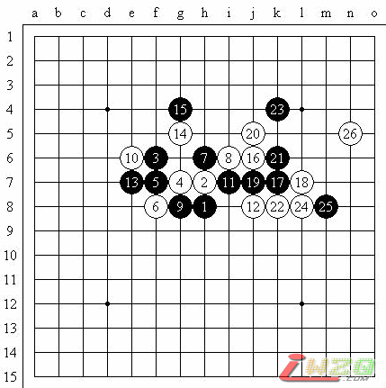

京津团体对抗赛
#1 京津团体对抗赛 作者：有志青年 发表时间：2007-4-24 9:49:31
我就不过多评述了，天津的市容看起来比北京好很多，或许是因为没有那么多人口的缘故吧，呵呵……下面是我在这次比赛中四轮对局的评述。
2007年4月京津团体对抗赛第一轮，疏星局（不换），5A＝i7，王林（黑）负李一（白）

疏星开局，11的选择不很好，应于12或i10位都是不错的选择，13怪，考虑过14－14，15－f10，16－16的白优变化，但15直接防守了，同样16－16，白棋优势。个人认为17－19位或许更强，实战17后18不错（因为实在看不出来到底能不能追胜 ），19看似有很多选择，但也只有实战中的很委屈的下法才是最强防。22考虑过l5的强点（或者先冲四），但总是能找到黑棋的强防，于是22－22保留上面的优势寻求下方新的发展。然后24，考虑25－i8，26－h9控制下方半个盘面，而黑棋在上方局部是没有胜的，但25－25？白棋简单抓禁。
2007年4月京津团体对抗赛第二轮，斜月局（交换），5A＝f9，魏强（黑）负李一（白）
开局之后才知道对手叫魏强……一名猛攻型的选手，我看过他的对局，早知如此我就开疏星局了……实战使用的7是斜月局的老定式，幸好我对这套定式还有一定的了解，当时的想法就是黑棋攻个满盘，我狂守，最后和棋……但15的进攻太直接了，19也不强，给了我一定回旋的余地。到31我基本满意，双方混战。后来分析实战34可能稍弱，以下是复杂的交换，37后黑棋在右下依然不能轻松取胜，所以我的压力还比较小。对手45的利用我没有太发现，于是在49活三时我遇到了些小小的麻烦，为了保全棋型还是选择了防在上方。51后52～54的交换方法是对手计算的盲点，给白棋带来了不小优势，但黑棋稳守就可以了，可惜55又弱！56强防兼做杀后白必胜。注意64不能在c12直接活三，否则65－f12有强烈反击！
2007年4月京津团体对抗赛第三轮，瑞星局（交换），5A＝g7，李一（黑）胜庞晋（白）
对手开瑞星局时我就一阵恶心，没办法，谁让我瑞星局太差呢，于是就有点消极作战的意思。给了个必败的5，看你能不能胜。 6、8正确，10？思考一下觉得还是得争取主动，而且有实战中（12都是可以预见的棋路）13、15做杀的强烈争先手段！以下黑必胜了。
2007年4月京津团体对抗赛第四轮，云月局（交换），5A＝i10，刘永胜（黑）胜李一（白）

由于前三轮全胜，最后一轮其实也有点消极的意思，并且想尝试一下这个云月的强防（本来准备了一堆名岚的谱，结果因为自己不太自信，一个都没用，诶……）。8、10我也没找到好的应对方法，13可以选择h10，但实战13优势似乎更大？我也就没怎么想应在了14，15好棋！17之后对手以精确的VCT结束了战斗，佩服一下……（似乎梁大伟也是有点随便下的意思……也是云月，他下必胜下输了。）
回来的路上还是没找到机会和吴昊下，侥幸赢了胡瑜一盘斜月，输了曹冬一盘瑞星、一盘疏星（都是输在研究上了），还输了梁大伟一盘流星，对定式理解不深……因为当时大家也都是昏昏沉沉的，所以就不发棋谱了哈～